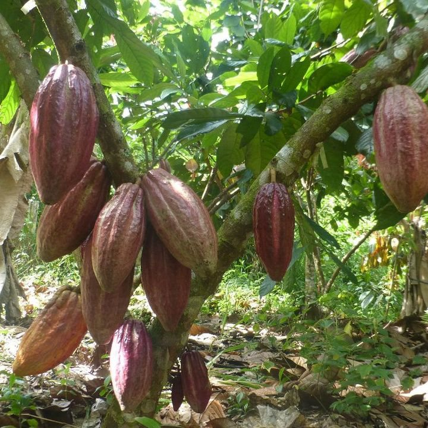
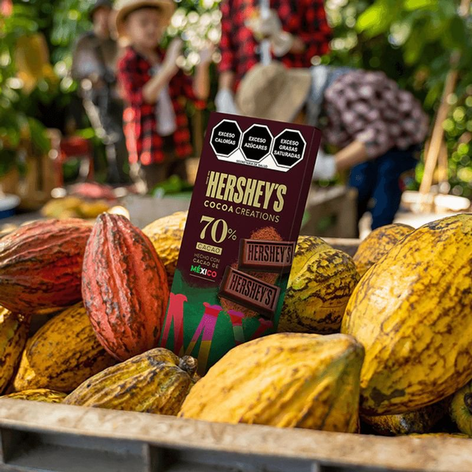
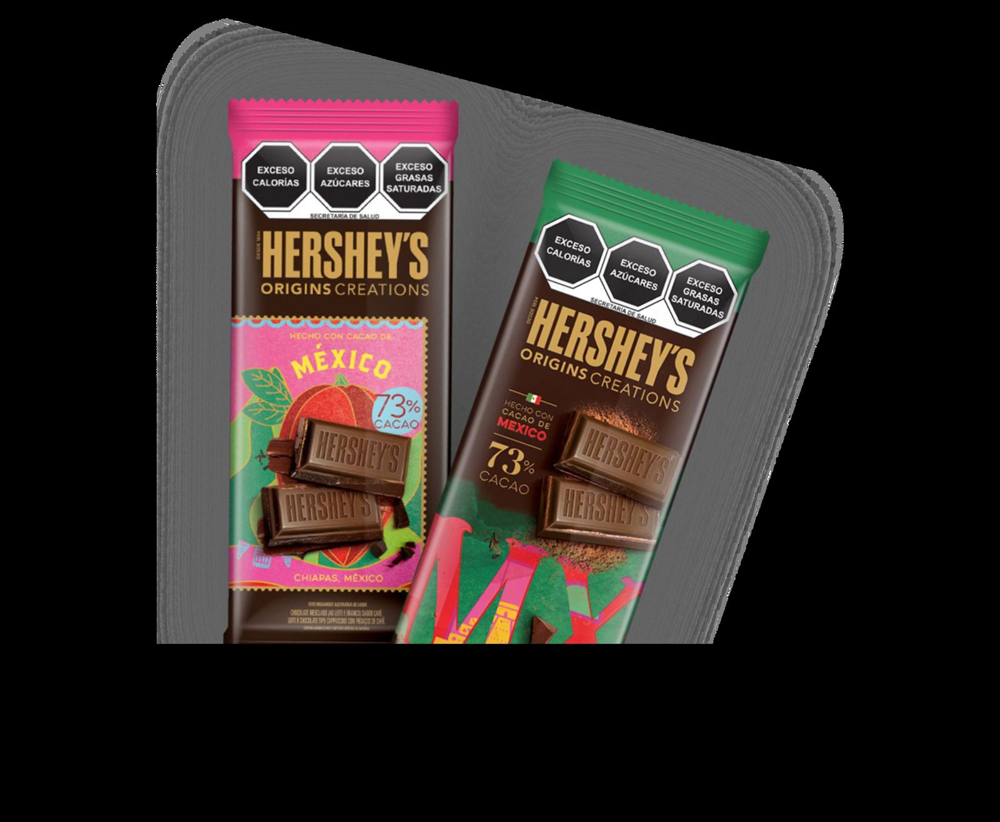

El contexto
Una crisis en la cuna del cacao.
En México, uno de los países con mayor historia ligada al cacao, pasaba algo catastrófico: una enfermedad conocida como moniliasis atacaba las poblaciones del fruto, devastando los cultivos y la industria agrícola del sureste.
Hershey's, el principal productor de chocolate de EE. UU. y uno de los mayores del mundo, decidió hacer algo al respecto.

El reto
Y una verdad incómoda que había que decir.
El brief pedía una campaña que apoyara el origen mexicano del cacao lanzando una barra «inspirada» en México para «apoyar» a los agricultores.
Aquí tuvimos que parar y decir una verdad incómoda: esa idea, por bien intencionada que fuera, no resolvía el problema — y hasta podía generar una reacción negativa. Si íbamos a ayudar, lo haríamos de verdad.

La idea
Ayudar desde donde la marca sí sabe.
La idea era simple: identificar el problema real y ayudar desde donde hiciera sentido para la marca — su conocimiento de la industria.

De idea a solución real
Devolver algo a los agricultores.
Así pasamos de una idea desconectada del problema a una solución real, junto a ECOM Cocoa México, que buscaba devolver algo de lo mucho que la marca ha recibido de los agricultores.
La iniciativa tuvo eco en medios: «Hershey's busca rescatar el cacao de Chiapas».
Cobertura en medios del Proyecto Cacao.
Lo que pasó
Hershey's Origins Creations, con cacao mexicano.
Al final logramos lanzar una tableta de Hershey's Origins Creations con cacao mexicano, que tuvo una gran recibida por parte del mercado, superando los pronósticos de venta.
